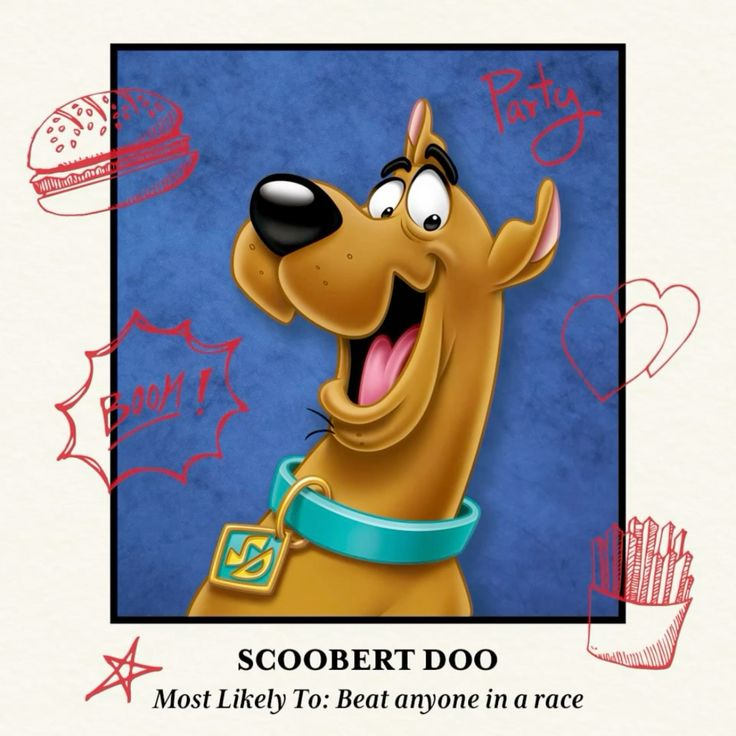

A lovable, goofy Great Dane with a big appetite and an even bigger heart. Though easily scared, Scooby always comes through for his friends—especially when bribed with a Scooby Snack! His signature catchphrase? “Ruh-roh, Raggy!”

Shaggy Rogers
Voiced: Casey Kasem (1969–1997, 2002–2009)
Scooby’s best friend and the most food-obsessed member of Mystery Inc. Shaggy is laid-back, cowardly, and always looking for his next meal. Despite his fear of ghosts and monsters, he somehow ends up in the middle of every spooky mystery.